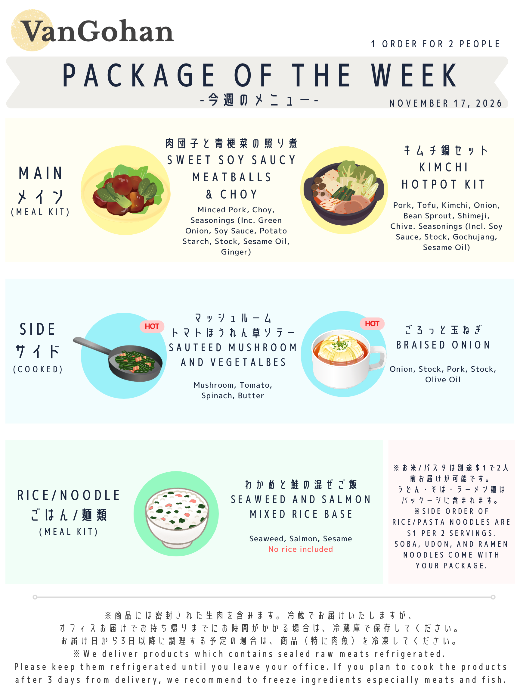

VanGohan Recipe: Week of 2026-11-23
ビーフ南蛮のアボカドタルタル
- Ingredients are marked with Orange Stickers 🥣
- Cooking time: 30-45mins
ご自宅でご用意いただくもの
インストラクション
- 牛肉に塩コショウをして、小麦粉をまぶし、溶き卵を絡める
- フライパンで1cmほどの油を中火(170℃)に熱し、牛肉を入れる
- 時々、裏返しながら揚げ色がつくまで5-8分ほど揚げ焼きにする
- 牛肉を取り出しSeasoning④に絡める
- 食べやすいサイズに切りSauce⑤をかけ、野菜を添える
味噌煮込みうどん
- Ingredients are marked with Yellow Stickers 🥣
- Cooking time: 10-15mins
ご自宅でご用意いただくもの
インストラクション
- と400mlの水を鍋で沸かし、味噌を溶かす
- 椎茸と揚げ、ネギを入れて2〜3分煮込む
- 麺を入れて更に1〜2分煮込み、火を止める
- 器に盛り付ける
- お好きな野菜や卵をお好みでプラスしてお楽しみください。
おでんキット
- Ingredients are marked with Blue stickers 🥣
- Cooking time: 40-60mins
ご自宅でご用意いただくもの
インストラクション
- 大根早く柔らかくしたい場合は、耐熱ボールに入れ、大根が浸るくらいの水を入れて10分ほど電子レンジで加熱する
- 具材 (野菜や練り物)とソース②、1リットルの水を鍋に入れて沸騰させる(卵は紙袋の中です)
- 沸騰したら弱火にして塩で味を調整し、15-20分ほど煮込んで完成
- 👍練り物は先に熱湯を全体にかけて油抜きするとさらに美味しくなります
- 👍一度冷まして時間を置いてから再度加熱してお召し上がりいただくと、さらに味が染みて美味しくなります
